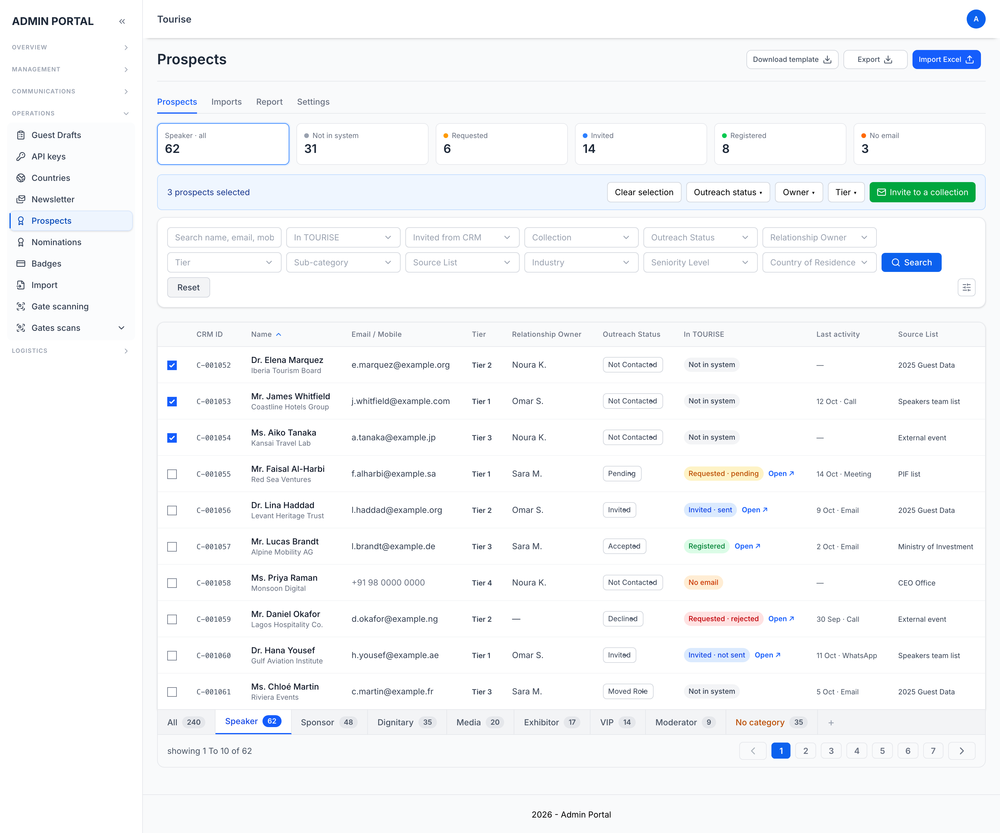
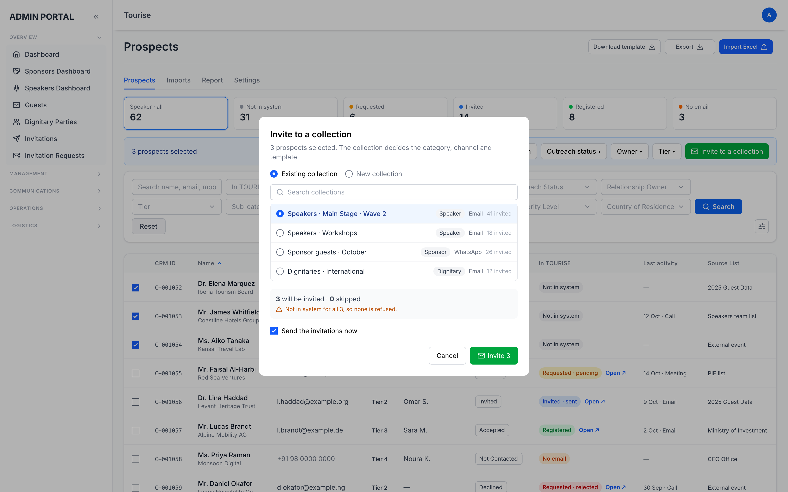

A new Prospects section in the TOURISE 2027 admin: the people we may invite, where each one is in the system, and inviting them. Revised for the client's template v4.1. Plan only, nothing built yet. 19 October 2026.
The team keeps lists of people it may want at the event in Excel, and the sheet cannot tell whether a person has asked for an invitation, been invited, or registered. The Prospects section imports the client's CRM sheet (TOURISE_CRM_Fields_and_Import_Template_v4.1.xlsx) and adds what Excel cannot:
Decisions needed: nine points, listed with a space for the answer in the last part, Questions. Four of them need the client. Everything else is decided.
Part A · For the business
| In the template | In the plan |
|---|---|
| Tier is 1 to 3 (Tier 4 removed) | Three values, admin-only, behind its own role box. |
| Category and Sub-category required, Sub-category under Category | Sub-categories become a system-wide feature (part 4). |
| Relationship Owner required; reassignments logged | An admin account; every change logged with old owner, new owner, who and when (part 5). |
| Invitation Channel: H.E.'s Office, MOFA, Royal Court, Other Ministries, Relationship Owner, CRM | Only CRM sends from the system; the others are recorded (part 6). |
| Security Clearance: Not Required, Not Submitted, Pending, Approved, Not Approved | Gates sending, as the template's rules say (part 6). |
| Invitation Status replaces Outreach Status: Not Sent, In Progress, Sent, Pending, Accepted, Declined | Follows the system where the system knows; the rest is the team's. |
| Sent Date and Sent By required once sent | So the CRM never sends twice. |
| Follow-up: owner, last contact, next reminder | Reminders notify the owner; overdue reads orange. |
| Possible duplicates on email, mobile, then name | Email or mobile refused; same name flagged (question 6). |
| No passport, ID, date of birth or photos (PDPL) | A file carrying such a column is refused. |
| A grey example row | Skipped on import. |
The first question the section answers. Each person has a journey, read live from the request, invitation and guest records it links to, never typed by hand:
| Step | Reached when | Shown with |
|---|---|---|
| In CRM | Imported or added | Date, by whom, the import file |
| Requested | A request has the email | Pending, accepted or rejected; the form; date |
| Invited | An invitation exists, from the CRM or from a request | Collection, channel, who invited, date, the invitation link |
| Sent | The system sent it, or a manual send was recorded | Date, and by the system or by whom (H.E.'s Office, MOFA …) |
| Delivered · Opened | The email or message provider reports it | Date |
| Registered | A guest registered with the invitation, or with the email | Registration number, category, sub-category, date, and the email used if it differs |
| Confirmed | The guest is confirmed and attending | Guest status |
| Declined · Rejected | The guest declined, or the request was rejected | Date, who |
| Where | How |
|---|---|
| Guests: Add, See more / profile, Change category | A second select beside the category, offering that category's sub-categories |
| Invitations: new collection | The collection's default sub-category |
| Invitations: Add people, the guest card, import | Per person, starting from the collection's default |
| CRM: import, the person's page, bulk edit | A column, a field, a bulk action |
| Registration | Not asked of the guest: a guest registering through an invitation takes the invitation's sub-category |
| Notification | Goes to |
|---|---|
| Made owner of a person (or of many, as one count) | The new owner |
| Next Reminder Date is today; it has passed (once a day while overdue) | The follow-up owner, else the relationship owner |
| Tracking moves: sent, opened, registered, confirmed, declined | The same |
| One of your people files a request | The same |
| Imports, edits, deletes | Admins who follow Prospects in their notification settings |
In the admin bell, and by email for those who turn it on.
| Rule | What the system does |
|---|---|
| Only the CRM channel sends | For H.E.'s Office, MOFA, Royal Court, Other Ministries and Relationship Owner, the invitation goes out elsewhere and is recorded (status, date, sent by). Once recorded, the CRM never sends its own. |
| H.E.'s Office | Needs clearance Approved before Sent; Not Required is refused for it. |
| Not Submitted · Pending | Nothing can be sent. |
| Not Approved | Blocked, with "escalate to Fahad". |
| Invitation Status | Sent is set when the CRM sends, or with the recorded date and sender; Accepted and Declined as question 2 decides; In Progress and Pending stay the team's. |
Checked on the server, in bulk too: a bulk invite of 200 with 30 blocked invites 170 and lists the 30 with the reason for each.
The template says Accepted opens registration through the CRM: the guest accepts, then gets the registration email. Today our invitation email is the registration link.
| Option | What happens | Trade-off |
|---|---|---|
| A. Accepted = registered RECOMMENDED | The invitation stays the registration link; the status reads Accepted once they register, Declined when they say no. | No new step for the guest; the client's two steps become one. |
| B. Two steps | The invitation asks accept or decline first; Accepted sends a second email with the link. | Follows the wording; a new page and email, and every guest clicks twice. |
| C. Manual | Accepted is set by hand (by phone, through an office); setting it sends the registration invitation. | Fits invitations sent outside the system. |
A and C can live together: CRM-channel invitations follow A, manual channels follow C.
The client's Field List says the sub-category "sets the exact template (e.g. Ministers & Excellencies Local)".
| Option | What happens | Trade-off |
|---|---|---|
| A. A tag now RECOMMENDED | Shown, filtered, exported, carried to the guest. The category still picks the form and emails. | What was asked; small. Per-sub-category templates wait. |
| B. Template per sub-category | A sub-category may have its own invitation, registration and confirmation templates; empty uses the category's. | Follows the Field List; more to build and to set up. |
The CRM requires one. Recommended: required wherever the chosen category has sub-categories defined, optional where it has none.
| Option | What happens | Trade-off |
|---|---|---|
| A. Refuse and flag RECOMMENDED | Same email or mobile: refused, naming the existing CRM ID. Same name, other email: imported and flagged Possible duplicate for an admin to check. | Nothing merged by mistake; two records until one is deleted. |
| B. A merge tool | A flagged pair is merged into one record with both histories. | What the template asks; a merge across activities, invitations and history to get right. |
| Option | What happens | Trade-off |
|---|---|---|
| A. Two copies | The CRM keeps its copy of the shared fields; the guest has its own. | Nothing to build, but they drift. |
| B. Linked, the guest wins RECOMMENDED | The CRM entry stays, linked; the shared fields are shown from the guest. The CRM keeps tier, owner, channel, clearance, status, source, activities. | One truth per field; the owner report still counts registered people. |
| C. Move to Guests | The CRM entry is deleted on registration. | The CRM-only fields need new guest fields or are lost. |
Should someone invited from the CRM find the registration form already holding what the CRM knows? A. What invitations hold today (prefix, names, email, mobile, company, job title) · B. Every shared field, still editable RECOMMENDED IF YES · C. Nothing.
The dropdown values. Every dropdown in v4.1 reads #REF! again: the sheets holding the lists were deleted. The Field List and Status Definitions give most values; still missing: Source List, Activity Type, Outcome and the industry hierarchy with EG's proposals. The admin's Download template will build the same columns with working dropdowns.
The template disagrees with itself. The Field List has Follow-up Owner and Last Contact Date, the Contacts sheet does not; the Contacts sheet has Follow-up sent and Previous category, the Field List does not; the Read Me counts 36 fields.
Sub-event Invitations is listed as a system field. What are sub-events? Left out of the first build until known.
| # | Decision |
|---|---|
| 1 | A section of its own, not part of Nominations. |
| 2 | Matched to the system by email (lower-cased), and by the invitation the CRM sent. |
| 3 | Two statuses side by side: tracking (the system's) and the team's Invitation Status. |
| 4 | The columns are the client's v4.1 Contacts sheet; its Activity Log imports too; Tier Sign-off stays the client's approval step, its reference recorded on the import. |
| 5 | A tab per category; inviting picks the collection, from any tab. |
| 6 | Importing never sends. A mobile-only person can be invited by SMS or WhatsApp. |
| 7 | Every action records the admin who did it. |
| 8 | The shared fields use the guest table's own names and values, now including the sub-category. |
| 9 | Sub-categories system-wide, defined in Category settings, a tag (part 4). |
| 10 | Owners are admin accounts; Prospects in Roles, limited by category; owners notified (part 5). |
| 11 | Tracking is the heart of the section (part 3). |
| 12 | Channel and clearance rules enforced on the server (part 6). |
The 37 columns of the v4.1 Contacts sheet. Same as registration means the guest record already holds the field with the same values.
| Group | Columns | Same as registration |
|---|---|---|
| Identity | CRM ID (blank = new, filled = update) · Prefix · First and Last Name · Arabic Name · Job Title · Company · Company Location · Email · Mobile · Gender · Nationality · Country of Residence · Region (from the country) | All but CRM ID and Company Location |
| Classification | Sector · Industry · Sub-industry · Seniority Level · Category · Sub-category · Tier (1–3) | All but Tier |
| Relationship & Source | Source List · List Provided By · Relationship Owner | CRM only |
| Invitation | Invitation Channel · Security Clearance · Invitation Status · Sent Date · Sent By | CRM only |
| Follow-up | Follow-up Owner · Last Contact Date · Next Reminder Date | CRM only |
| History | History / Source · Received By · Previous Engagement · Previous Category · Notes | CRM only |
| System (never imported) | Tracking / Registration Status · Registration Link Sent · Tier Sign-off Reference · Owner History · Possible Duplicate · Last Updated / By | Read from the system |
One search box over name (English and Arabic), email, mobile, company, job title and CRM ID. Filters combine, stay in the page address, and apply to the export.
| Group | Filters |
|---|---|
| Tracking | Each step · not opened after N days · sent, not registered · Invited from CRM · Collection |
| The team's follow-up | Invitation Status · Channel · Security Clearance · Relationship Owner · Follow-up Owner · Tier · Reminder overdue or this week · Last contact · No activity yet |
| Who they are | Category (also the tabs) · Sub-category · Sector · Industry · Sub-industry · Seniority · Gender |
| Where they are | Nationality · Country of Residence · Region · Company Location |
| Where they came from | Source List · List Provided By · History / Source · Import file · Date added · Possible duplicate |
Drawn inside the real TOURISE admin with sample people, before v4.1: the Outreach Status column shown here becomes Invitation Status, and the In TOURISE column becomes Tracking with its steps. The details may move during the build.


Part B · For developers
prospects.invitation_id → invitation → guests.code_id), then by lower-cased email over guests, invitations and requests; furthest step wins; filtered in SQL with EXISTS. A stored copy would need updating from four modules.sub_categories (category_id, name_en, name_ar, sort_order, is_active) and a nullable sub_category_id on guests, invitations, invitation_collections, prospects; the server checks it belongs to the record's category. The guest's three save paths (public store, admin create, admin update) each take it, tested through HTTP.addGuests() moves into a service both call; invitations made here carry created_via = 'prospect'.relationship_owner_id and follow_up_owner_id are admin ids; reassignments are activity entries. A daily scheduled job raises due and overdue reminders; tracking moves notify through AdminActivityFeed.prospects feature in AdminPermissions, with the role's category limits applied to every query.| # | Step | Contains |
|---|---|---|
| 0 | Sub-categories | Table and Category settings; the field on guests, invitations, collections; the select on every form and import; inherited at registration; column, filter, bulk set, export |
| 1 | Import and records | Tables, settings lists, template, import with CRM ID update, tabs, record, edit, bulk edit, Roles with category limits, audit |
| 2 | Tracking | The journey lookup, column with steps, filters, funnel tiles, timeline, links; the invitations.email index |
| 3 | Inviting | Shared minting service, channel and clearance rules, recording manual invitations, bulk results with reasons |
| 4 | Follow-up and report | Activities, owners' reminders and the daily check, owner notifications, Activity Log sheet, report by owner |
| 5 | Export | A tab or the filtered table, every column and the tracking step |
Each step merges on its own. Step 1 waits on the client's lists (7.7) only for the columns that use them.
Everything waiting on an answer. The recommended answer is what will be built if nobody says otherwise.
| # | Question | For | Options | Recommended | Answer |
|---|---|---|---|---|---|
| 1 | The values of Source List, Activity Type, Outcome and the industry hierarchy (7.7) | CLIENT | Send the lists; kept by admins in Settings | Admin-kept lists | |
| 2 | Does Accepted come before registration? (7.1) | BUSINESS | A. Accepted = registered · B. Two steps · C. Manual | A, with C for manual channels | |
| 3 | Does a sub-category choose the templates? (7.2) | BUSINESS | A. A tag now · B. Template per sub-category | A | |
| 4 | Is a sub-category required outside the CRM? (7.3) | BUSINESS | Required when the category has some · Always · Never | When the category has some | |
| 5 | After a person registers, where does their data live? (7.5) | BUSINESS | A. Two copies · B. Linked, the guest wins · C. Move to Guests | B | |
| 6 | Duplicates: flag only, or merge? (7.4) | BUSINESS | A. Refuse and flag · B. A merge tool | A | |
| 7 | Should the registration form be prefilled? (7.6) | CLIENT | A. Today's fields · B. Every shared field · C. Nothing | B, if yes | |
| 8 | Which is right where the Contacts sheet and the Field List disagree? (7.7) | CLIENT | Follow-up Owner, Last Contact Date, Follow-up sent, Previous category | Keep all four | |
| 9 | What are sub-event invitations? (7.7) | CLIENT | Explain, or drop the field | Left out for now |
Full detail (every column, import rule and test case): tourise-docs/tasks/054-prospects/TASK.md.